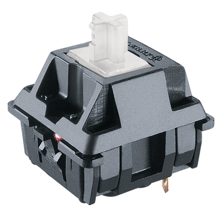
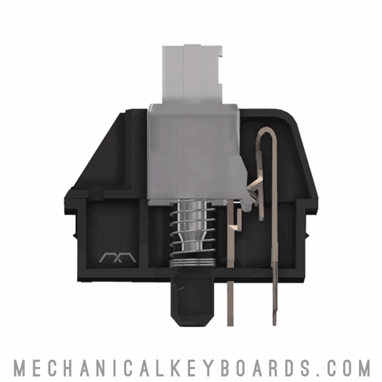

This list wouldn't be complete without the inclusion of a Cherry switch. Cherry is believed to be the oldest keyboard manufacturer still in business. Clear switches were one of my first switches and one that initially piqued my interest in the mechanical keyboard hobby.
Cherry MX Clear switches have a medium tactile bump. Enthusists have often swapped the springs inside of this switch to give it a lighter feel.
 Here is a typing test with the Cherry MX Clear switch:
Go back